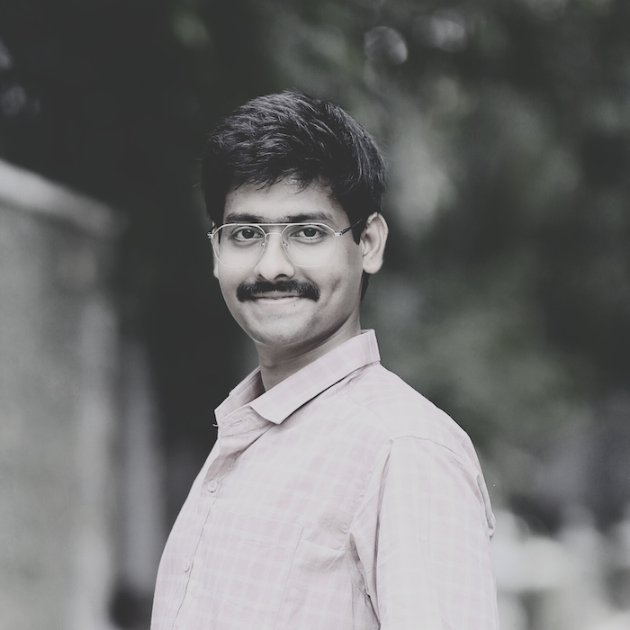

Hi, I'm M. V. Prasad, a.k.a. Vara Prasad Maruboina or simply Vara. I'm a Lead Software Engineer at Bluehost with over 10 years of experience building, scaling, and operating production systems. I currently work on the WordPress Platform team, where I design tools, plugins, and applications used by millions of WordPress sites worldwide.
What I Do
I design and manage large-scale, distributed systems that power critical WordPress platform features—performance scanning, customer access controls, feature entitlements, and site-level notifications. My work focuses on reliability, scale, and long-term maintainability in real-world, high-traffic environments.
Recently, I built and scaled a system capable of handling more than 25 million website scans per week, architected using cloud-native services and asynchronous processing. This platform was later migrated across cloud providers, requiring thoughtful redesign around autoscaling, queue depth–based processing, and operational resilience.
Over the years, my experience has spanned WordPress platform engineering, high-throughput backend systems, cloud-native architectures across AWS and OCI, queue-driven and autoscaled workloads, and developer tooling that supports both internal teams and end customers.
How I Work
I believe strong engineers take ownership beyond assigned tasks—owning problems end to end, identifying gaps before they become incidents, and continuously improving systems through automation. I prefer learning by building, breaking, and iterating in real environments rather than relying solely on theory.
This mindset has shaped my career growth—from experimenting with small projects during college, to navigating production incidents, support operations, and DevOps workflows, and eventually leading and scaling systems that operate at significant scale. Taking initiative, assigning work to myself when needed, and improving existing processes have been key to my professional journey.
Beyond the Code
Outside of day-to-day engineering, I enjoy sharing practical technology lessons and real-world experiences from building systems at scale. I’m also deeply interested in philosophy and inner well-being, particularly Advaita, meditation, and cultivating clarity and balance alongside a demanding technical career.
I enjoy mentoring engineers and students on career growth, encouraging hands-on learning and open-source contribution, and exploring how modern tools—including AI—can reduce repetitive work and accelerate learning when used thoughtfully.
For collaboration or conversations, feel free to reach out at varaprasadmaruboina@gmail.com or connect on LinkedIn.
